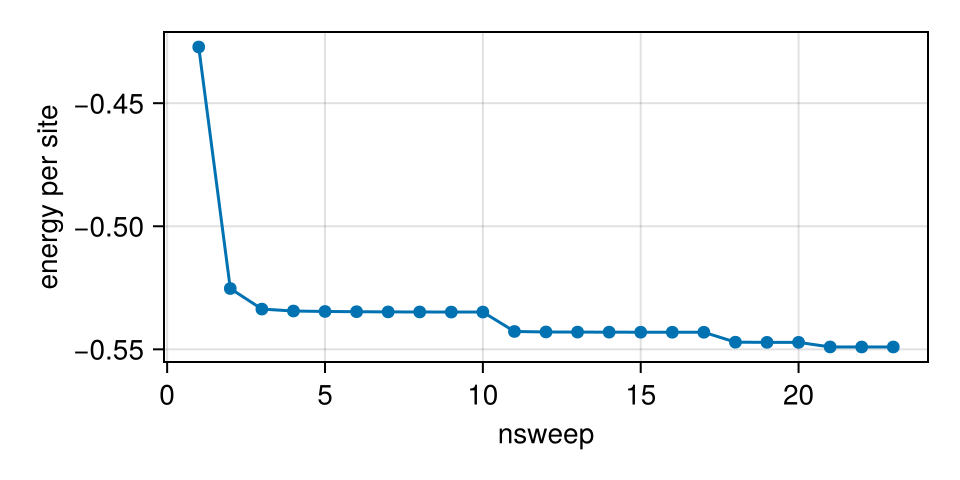
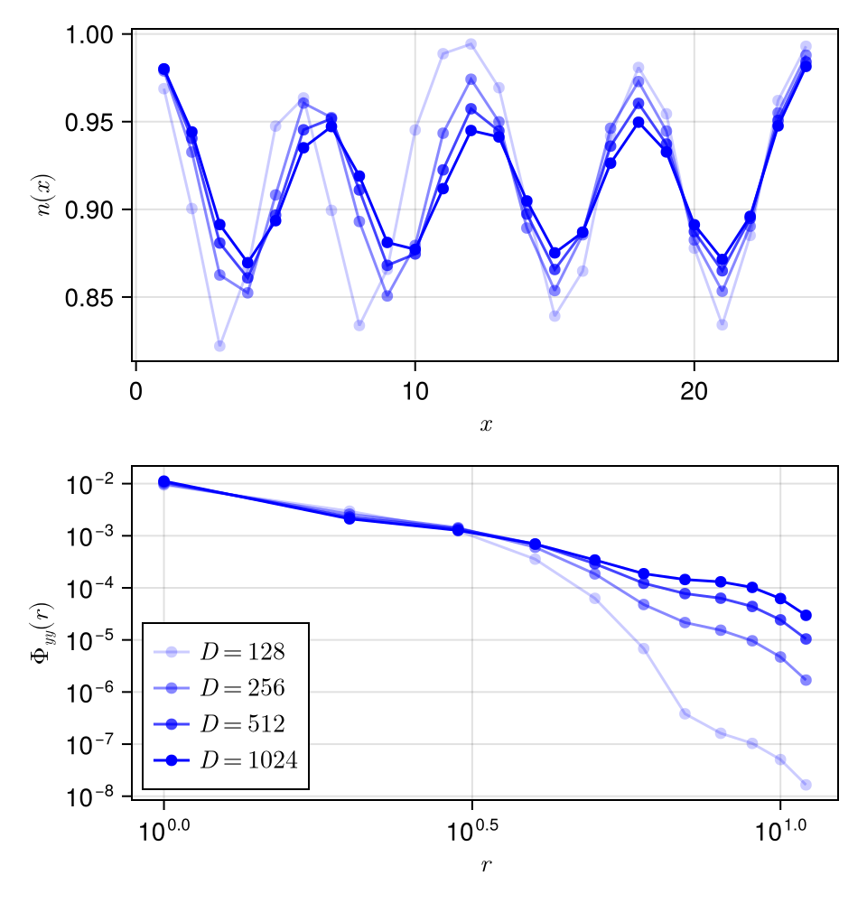

Hubbard Model
Ground state
In this section, we use Hubbard model as an example to demonstrate how to simulate fermionic systems and compute multi-site correlations. We consider the square-lattice Hubbard model on a $W\times L$ cylinder. Note we use a relatively small bond dimension here to avoid too much online build time, which is not sufficient to obtain converged results.
The Hamiltonian of Hubbard model reads
$H = -t\sum_{\langle i, j\rangle\sigma} c_{i\sigma}^\dagger c_{j\sigma} + U\sum_i n_{i\uparrow}n_{i\downarrow}$. Here we set $t = 1$ as energy unit and use charge U(1) and spin SU(2) symmetries.
using FiniteMPS
using FiniteLattices
using CairoMakie, Statistics
mkpath("figs_Hubbard") # save figures
# parameters
L = 24
W = 4
U = 12.0
Ntot = 88 # total particle number
Dmin = 128 # min bond dimension
Dmax = 1024 # max bond dimension
# generate lattices with FiniteLattices.jl
Latt = YCSqua(L, W) |> Snake!
# generate the Hamiltonian MPO
Tree = InteractionTree(size(Latt))
# hopping
for (i, j) in neighbor(Latt; ordered = true)
addIntr!(Tree, U1SU2Fermion.FdagF, (i, j), (true, true), -1.0; name = (:Fdag, :F), Z = U1SU2Fermion.Z)
end
# U terms
for i in 1:size(Latt)
addIntr!(Tree, U1SU2Fermion.nd, i, U; name = :nd)
end
H = AutomataMPO(Tree)SparseMPO{96}: total memory = 964.619 KiB
Bond 0-> 1: 1 -> 1
Bond 1-> 2: 4 -> 6
Bond 2-> 3: 6 -> 10
Bond 3-> 4: 8 -> 14
Bond 4-> 5: 10 -> 18
Bond 5-> 6: 10 -> 18
Bond 6-> 7: 10 -> 18
Bond 7-> 8: 10 -> 18
Bond 8-> 9: 10 -> 18
Bond 9->10: 10 -> 18
Bond 10->11: 10 -> 18
Bond 11->12: 10 -> 18
Bond 12->13: 10 -> 18
Bond 13->14: 10 -> 18
Bond 14->15: 10 -> 18
Bond 15->16: 10 -> 18
Bond 16->17: 10 -> 18
Bond 17->18: 10 -> 18
Bond 18->19: 10 -> 18
Bond 19->20: 10 -> 18
Bond 20->21: 10 -> 18
Bond 21->22: 10 -> 18
Bond 22->23: 10 -> 18
Bond 23->24: 10 -> 18
Bond 24->25: 10 -> 18
Bond 25->26: 10 -> 18
Bond 26->27: 10 -> 18
Bond 27->28: 10 -> 18
Bond 28->29: 10 -> 18
Bond 29->30: 10 -> 18
Bond 30->31: 10 -> 18
Bond 31->32: 10 -> 18
Bond 32->33: 10 -> 18
Bond 33->34: 10 -> 18
Bond 34->35: 10 -> 18
Bond 35->36: 10 -> 18
Bond 36->37: 10 -> 18
Bond 37->38: 10 -> 18
Bond 38->39: 10 -> 18
Bond 39->40: 10 -> 18
Bond 40->41: 10 -> 18
Bond 41->42: 10 -> 18
Bond 42->43: 10 -> 18
Bond 43->44: 10 -> 18
Bond 44->45: 10 -> 18
Bond 45->46: 10 -> 18
Bond 46->47: 10 -> 18
Bond 47->48: 10 -> 18
Bond 48->49: 10 -> 18
Bond 49->50: 10 -> 18
Bond 50->51: 10 -> 18
Bond 51->52: 10 -> 18
Bond 52->53: 10 -> 18
Bond 53->54: 10 -> 18
Bond 54->55: 10 -> 18
Bond 55->56: 10 -> 18
Bond 56->57: 10 -> 18
Bond 57->58: 10 -> 18
Bond 58->59: 10 -> 18
Bond 59->60: 10 -> 18
Bond 60->61: 10 -> 18
Bond 61->62: 10 -> 18
Bond 62->63: 10 -> 18
Bond 63->64: 10 -> 18
Bond 64->65: 10 -> 18
Bond 65->66: 10 -> 18
Bond 66->67: 10 -> 18
Bond 67->68: 10 -> 18
Bond 68->69: 10 -> 18
Bond 69->70: 10 -> 18
Bond 70->71: 10 -> 18
Bond 71->72: 10 -> 18
Bond 72->73: 10 -> 18
Bond 73->74: 10 -> 18
Bond 74->75: 10 -> 18
Bond 75->76: 10 -> 18
Bond 76->77: 10 -> 18
Bond 77->78: 10 -> 18
Bond 78->79: 10 -> 18
Bond 79->80: 10 -> 18
Bond 80->81: 10 -> 18
Bond 81->82: 10 -> 18
Bond 82->83: 10 -> 18
Bond 83->84: 10 -> 18
Bond 84->85: 10 -> 18
Bond 85->86: 10 -> 18
Bond 86->87: 10 -> 18
Bond 87->88: 10 -> 18
Bond 88->89: 10 -> 18
Bond 89->90: 10 -> 18
Bond 90->91: 10 -> 18
Bond 91->92: 10 -> 18
Bond 92->93: 10 -> 18
Bond 93->94: 8 -> 14
Bond 94->95: 6 -> 10
Bond 95->96: 4 -> 6
The above code generates the Hamiltonian MPO for the Hubbard model, the only new usage is setting (true, true) to indicate both operators are fermionic and passing the parity operator Z when adding hopping terms. Next we generate a random density distribution and obtain the corresponding MPS.
# random density distribution
lsn = zeros(Int64, size(Latt))
for _ in 1:Ntot
i = rand(findall(==(minimum(lsn)), lsn))
lsn[i] += 1
end
# charge quantum numbers of horizontal bonds
lsqc = [0]
for n in reverse(lsn) # from right to left
if n == 0
push!(lsqc, lsqc[end] + 1)
elseif n == 1
push!(lsqc, lsqc[end])
else
push!(lsqc, lsqc[end] - 1)
end
end
lsqc = reverse(lsqc[2:end])
# spaces of horizontal bonds
lsspaces = map(1:size(Latt)) do i
# the left boundary bond
i == 1 && return Rep[U₁×SU₂]((lsqc[1], iseven(Ntot) ? 0 : 1/2) => 1)
return Rep[U₁×SU₂]((lsqc[i], s) => 1 for s in 0:1/2:1/2)
end
Ψ = randMPS(fill(U1SU2Fermion.pspace, size(Latt)), lsspaces)MPS{96, Float64, StoreMemory}: Center = [1, 1], Norm = 1.0, total memory = 28.164 KiB
Bond 0-> 1: Rep[U₁ × SU₂]((8, 0)=>1), dim = 1 -> 1
Bond 1-> 2: Rep[U₁ × SU₂]((8, 1/2)=>1), dim = 1 -> 2
Bond 2-> 3: Rep[U₁ × SU₂]((7, 1/2)=>1), dim = 1 -> 2
Bond 3-> 4: Rep[U₁ × SU₂]((7, 0)=>1), dim = 1 -> 1
Bond 4-> 5: Rep[U₁ × SU₂]((7, 1/2)=>1), dim = 1 -> 2
Bond 5-> 6: Rep[U₁ × SU₂]((7, 0)=>1), dim = 1 -> 1
Bond 6-> 7: Rep[U₁ × SU₂]((7, 1/2)=>1), dim = 1 -> 2
Bond 7-> 8: Rep[U₁ × SU₂]((7, 0)=>1), dim = 1 -> 1
Bond 8-> 9: Rep[U₁ × SU₂]((7, 1/2)=>1), dim = 1 -> 2
Bond 9->10: Rep[U₁ × SU₂]((7, 0)=>1), dim = 1 -> 1
Bond 10->11: Rep[U₁ × SU₂]((7, 1/2)=>1), dim = 1 -> 2
Bond 11->12: Rep[U₁ × SU₂]((7, 0)=>1), dim = 1 -> 1
Bond 12->13: Rep[U₁ × SU₂]((6, 0)=>1), dim = 1 -> 1
Bond 13->14: Rep[U₁ × SU₂]((6, 1/2)=>1), dim = 1 -> 2
Bond 14->15: Rep[U₁ × SU₂]((6, 0)=>1), dim = 1 -> 1
Bond 15->16: Rep[U₁ × SU₂]((6, 1/2)=>1), dim = 1 -> 2
Bond 16->17: Rep[U₁ × SU₂]((6, 0)=>1), dim = 1 -> 1
Bond 17->18: Rep[U₁ × SU₂]((6, 1/2)=>1), dim = 1 -> 2
Bond 18->19: Rep[U₁ × SU₂]((6, 0)=>1), dim = 1 -> 1
Bond 19->20: Rep[U₁ × SU₂]((6, 1/2)=>1), dim = 1 -> 2
Bond 20->21: Rep[U₁ × SU₂]((6, 0)=>1), dim = 1 -> 1
Bond 21->22: Rep[U₁ × SU₂]((6, 1/2)=>1), dim = 1 -> 2
Bond 22->23: Rep[U₁ × SU₂]((6, 0)=>1), dim = 1 -> 1
Bond 23->24: Rep[U₁ × SU₂]((5, 0)=>1), dim = 1 -> 1
Bond 24->25: Rep[U₁ × SU₂]((5, 1/2)=>1), dim = 1 -> 2
Bond 25->26: Rep[U₁ × SU₂]((5, 0)=>1), dim = 1 -> 1
Bond 26->27: Rep[U₁ × SU₂]((5, 1/2)=>1), dim = 1 -> 2
Bond 27->28: Rep[U₁ × SU₂]((5, 0)=>1), dim = 1 -> 1
Bond 28->29: Rep[U₁ × SU₂]((5, 1/2)=>1), dim = 1 -> 2
Bond 29->30: Rep[U₁ × SU₂]((5, 0)=>1), dim = 1 -> 1
Bond 30->31: Rep[U₁ × SU₂]((5, 1/2)=>1), dim = 1 -> 2
Bond 31->32: Rep[U₁ × SU₂]((5, 0)=>1), dim = 1 -> 1
Bond 32->33: Rep[U₁ × SU₂]((5, 1/2)=>1), dim = 1 -> 2
Bond 33->34: Rep[U₁ × SU₂]((5, 0)=>1), dim = 1 -> 1
Bond 34->35: Rep[U₁ × SU₂]((5, 1/2)=>1), dim = 1 -> 2
Bond 35->36: Rep[U₁ × SU₂]((4, 1/2)=>1), dim = 1 -> 2
Bond 36->37: Rep[U₁ × SU₂]((4, 0)=>1), dim = 1 -> 1
Bond 37->38: Rep[U₁ × SU₂]((4, 1/2)=>1), dim = 1 -> 2
Bond 38->39: Rep[U₁ × SU₂]((4, 0)=>1), dim = 1 -> 1
Bond 39->40: Rep[U₁ × SU₂]((4, 1/2)=>1), dim = 1 -> 2
Bond 40->41: Rep[U₁ × SU₂]((4, 0)=>1), dim = 1 -> 1
Bond 41->42: Rep[U₁ × SU₂]((4, 1/2)=>1), dim = 1 -> 2
Bond 42->43: Rep[U₁ × SU₂]((4, 0)=>1), dim = 1 -> 1
Bond 43->44: Rep[U₁ × SU₂]((4, 1/2)=>1), dim = 1 -> 2
Bond 44->45: Rep[U₁ × SU₂]((4, 0)=>1), dim = 1 -> 1
Bond 45->46: Rep[U₁ × SU₂]((4, 1/2)=>1), dim = 1 -> 2
Bond 46->47: Rep[U₁ × SU₂]((4, 0)=>1), dim = 1 -> 1
Bond 47->48: Rep[U₁ × SU₂]((4, 1/2)=>1), dim = 1 -> 2
Bond 48->49: Rep[U₁ × SU₂]((4, 0)=>1), dim = 1 -> 1
Bond 49->50: Rep[U₁ × SU₂]((4, 1/2)=>1), dim = 1 -> 2
Bond 50->51: Rep[U₁ × SU₂]((4, 0)=>1), dim = 1 -> 1
Bond 51->52: Rep[U₁ × SU₂]((4, 1/2)=>1), dim = 1 -> 2
Bond 52->53: Rep[U₁ × SU₂]((4, 0)=>1), dim = 1 -> 1
Bond 53->54: Rep[U₁ × SU₂]((4, 1/2)=>1), dim = 1 -> 2
Bond 54->55: Rep[U₁ × SU₂]((4, 0)=>1), dim = 1 -> 1
Bond 55->56: Rep[U₁ × SU₂]((3, 0)=>1), dim = 1 -> 1
Bond 56->57: Rep[U₁ × SU₂]((3, 1/2)=>1), dim = 1 -> 2
Bond 57->58: Rep[U₁ × SU₂]((3, 0)=>1), dim = 1 -> 1
Bond 58->59: Rep[U₁ × SU₂]((3, 1/2)=>1), dim = 1 -> 2
Bond 59->60: Rep[U₁ × SU₂]((3, 0)=>1), dim = 1 -> 1
Bond 60->61: Rep[U₁ × SU₂]((3, 1/2)=>1), dim = 1 -> 2
Bond 61->62: Rep[U₁ × SU₂]((3, 0)=>1), dim = 1 -> 1
Bond 62->63: Rep[U₁ × SU₂]((3, 1/2)=>1), dim = 1 -> 2
Bond 63->64: Rep[U₁ × SU₂]((3, 0)=>1), dim = 1 -> 1
Bond 64->65: Rep[U₁ × SU₂]((3, 1/2)=>1), dim = 1 -> 2
Bond 65->66: Rep[U₁ × SU₂]((3, 0)=>1), dim = 1 -> 1
Bond 66->67: Rep[U₁ × SU₂]((2, 0)=>1), dim = 1 -> 1
Bond 67->68: Rep[U₁ × SU₂]((2, 1/2)=>1), dim = 1 -> 2
Bond 68->69: Rep[U₁ × SU₂]((2, 0)=>1), dim = 1 -> 1
Bond 69->70: Rep[U₁ × SU₂]((2, 1/2)=>1), dim = 1 -> 2
Bond 70->71: Rep[U₁ × SU₂]((2, 0)=>1), dim = 1 -> 1
Bond 71->72: Rep[U₁ × SU₂]((2, 1/2)=>1), dim = 1 -> 2
Bond 72->73: Rep[U₁ × SU₂]((2, 0)=>1), dim = 1 -> 1
Bond 73->74: Rep[U₁ × SU₂]((2, 1/2)=>1), dim = 1 -> 2
Bond 74->75: Rep[U₁ × SU₂]((2, 0)=>1), dim = 1 -> 1
Bond 75->76: Rep[U₁ × SU₂]((2, 1/2)=>1), dim = 1 -> 2
Bond 76->77: Rep[U₁ × SU₂]((2, 0)=>1), dim = 1 -> 1
Bond 77->78: Rep[U₁ × SU₂]((2, 1/2)=>1), dim = 1 -> 2
Bond 78->79: Rep[U₁ × SU₂]((2, 0)=>1), dim = 1 -> 1
Bond 79->80: Rep[U₁ × SU₂]((2, 1/2)=>1), dim = 1 -> 2
Bond 80->81: Rep[U₁ × SU₂]((2, 0)=>1), dim = 1 -> 1
Bond 81->82: Rep[U₁ × SU₂]((2, 1/2)=>1), dim = 1 -> 2
Bond 82->83: Rep[U₁ × SU₂]((1, 1/2)=>1), dim = 1 -> 2
Bond 83->84: Rep[U₁ × SU₂]((0, 1/2)=>1), dim = 1 -> 2
Bond 84->85: Rep[U₁ × SU₂]((0, 0)=>1), dim = 1 -> 1
Bond 85->86: Rep[U₁ × SU₂]((0, 1/2)=>1), dim = 1 -> 2
Bond 86->87: Rep[U₁ × SU₂]((0, 0)=>1), dim = 1 -> 1
Bond 87->88: Rep[U₁ × SU₂]((0, 1/2)=>1), dim = 1 -> 2
Bond 88->89: Rep[U₁ × SU₂]((0, 0)=>1), dim = 1 -> 1
Bond 89->90: Rep[U₁ × SU₂]((0, 1/2)=>1), dim = 1 -> 2
Bond 90->91: Rep[U₁ × SU₂]((0, 0)=>1), dim = 1 -> 1
Bond 91->92: Rep[U₁ × SU₂]((0, 1/2)=>1), dim = 1 -> 2
Bond 92->93: Rep[U₁ × SU₂]((0, 0)=>1), dim = 1 -> 1
Bond 93->94: Rep[U₁ × SU₂]((0, 1/2)=>1), dim = 1 -> 2
Bond 94->95: Rep[U₁ × SU₂]((0, 0)=>1), dim = 1 -> 1
Bond 95->96: Rep[U₁ × SU₂]((0, 1/2)=>1), dim = 1 -> 2
Then we prepare the ObservableTree used to calculate observables.
ObsTree = ObservableTree(size(Latt))
# on-site terms
for i in 1:size(Latt)
addObs!(ObsTree, U1SU2Fermion.n, i; name = :n) # density
addObs!(ObsTree, U1SU2Fermion.nd, i; name = :nd) # double occupancy
end
# all-to all 2-site correlations
for i in 1:size(Latt), j in i:size(Latt)
# spin correlation
addObs!(ObsTree, U1SU2Fermion.SS, (i, j), (false, false); name = (:S, :S))
# density correlation
addObs!(ObsTree, (U1SU2Fermion.n, U1SU2Fermion.n), (i, j), (false, false); name = (:n, :n))
# single particle correlation
addObs!(ObsTree, U1SU2Fermion.FdagF, (i, j), (true, true); name = (:Fdag, :F), Z = U1SU2Fermion.Z)
end
# singlet pairing correlations of y-bonds
Pairs = [(Latt[x, y], Latt[x, y % W + 1]) for x in 1:L for y in 1:W]
for idx1 in 1:length(Pairs), idx2 in idx1:length(Pairs)
addObs!(ObsTree, U1SU2Fermion.ΔₛdagΔₛ, (Pairs[idx1]..., Pairs[idx2]...), (true, true, true, true); name = (:Fdag, :Fdag, :F, :F), Z = U1SU2Fermion.Z)
end
# observables of the initial random state
calObs!(ObsTree, Ψ)
Obs = convert(Dict, ObsTree)Dict{String, Dict} with 6 entries:
"nd" => Dict{Tuple{Int64}, Number}((70,)=>0.0, (21,)=>0.0, (38,)=>0.0…
"FdagFdagFF" => Dict{NTuple{4, Int64}, Number}((33, 34, 94, 93)=>0.0, (66, 67…
"SS" => Dict{Tuple{Int64, Int64}, Number}((19, 86)=>0.0, (65, 69)=>0.…
"nn" => Dict{Tuple{Int64, Int64}, Number}((19, 86)=>1.0, (65, 69)=>1.…
"FdagF" => Dict{Tuple{Int64, Int64}, Number}((19, 86)=>0.0, (65, 69)=>0.…
"n" => Dict{Tuple{Int64}, Number}((70,)=>1.0, (21,)=>1.0, (38,)=>1.0…We can verify that the initial density distribution matches the random configuration via
# check initial density distribution
@assert all(i -> Obs["n"][(i,)] ≈ lsn[i], 1:length(lsn))Then, we perform the CBE-DMRG to obtain the ground state.
Env = Environment(Ψ', H, Ψ)
lsD = [Dmin]
lsE = Float64[]
lsObs = Dict[]
etol = 1e-5 # energy tolerance
MaxSweeps = 100 # avoid dead loops
for i in 1:MaxSweeps
D = lsD[end]
info, _ = DMRGSweep1!(Env; K = 16, trunc = truncdim(D),
CBEAlg = NaiveCBE(D + div(D, 4), 1e-8; rsvd = true),
)
push!(lsE, info[2].dmrg[1].Eg)
# @show D, lsE[end]
if i > 1 && (lsE[end-1] - lsE[end])/size(Latt) < etol
calObs!(ObsTree, Ψ)
push!(lsObs, convert(Dict, ObsTree))
D *= 2 # increase bond dimension
D > Dmax && break # converged
end
push!(lsD, D)
end
# plot the energy vs nsweep
fig = Figure(size = (480, 240))
ax = Axis(fig[1, 1];
xlabel = "nsweep",
ylabel = "energy per site")
scatterlines!(ax, lsE / size(Latt)) # per site
save("figs_Hubbard/GS_energy.png", fig) The parameters are chosen as $U = 12$ and $\delta = 1/12$, where the ground state belongs to LE1 phase that exhibits half-filled charge density wave with $\lambda_\textrm{CDW}= 1/(2\delta) = 6$ and power-law pairing correlation.
# illustrate CDW
fig = Figure(size = (480, 500))
ax = Axis(fig[1, 1];
xlabel = L"x",
ylabel = L"n(x)")
map(lsObs, unique(lsD), range(0.2, 1.0;length = length(lsObs))) do Obs, D, α
lsnx = map(1:L) do x
return mean(1:W) do y
Obs["n"][(Latt[x, y],)]
end
end
scatterlines!(ax, 1:L, lsnx;
color = (:blue, α),
label = L"D = %$(D)"
)
end
# pairing correlation in 1/4 to 3/4 bulk region
ax2 = Axis(fig[2, 1];
xlabel = L"r",
ylabel = L"\Phi_{yy}(r)",
xscale = log10,
yscale = log10,
)
lsr = 1:div(L, 2) - 1
map(lsObs, unique(lsD), range(0.2, 1.0;length = length(lsObs))) do Obs, D, α
lsΦyy = map(lsr) do r
mean([(x, y) for x in div(L, 4)+1 : div(3*L, 4)-r for y in 1:W]) do (x, y)
Obs["FdagFdagFF"][(Latt[x, y], Latt[x, y % W + 1], Latt[x + r, y], Latt[x + r, y % W + 1])]
end
end
scatterlines!(ax2, lsr, lsΦyy;
color = (:blue, α),
label = L"D = %$(D)"
)
end
axislegend(ax2; position = (0, 0), rowgap = 0)
save("figs_Hubbard/GS_Obs.png", fig) Finally, we illustrate the CDW and the pairing correlation. Emphasize again this is only a demonstrative example, a much larger bond dimension is required to reproduce the power-law pairing correlation.
Finite temperature
TODO